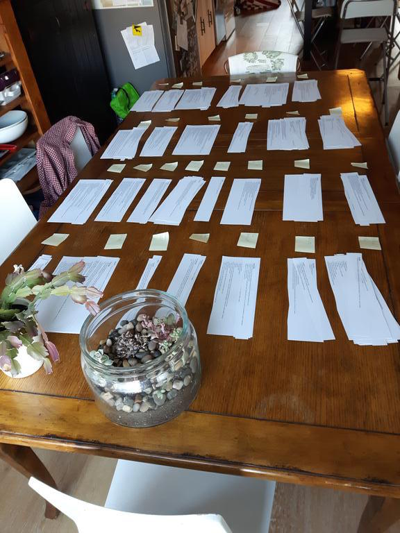

Analog is More Satisfying
I’m organizing my thoughts about other people’s thoughts for the next revision of How to Teach Programming (and Other Things), and have found yet again that moving lines of text around in Emacs isn’t nearly as satisfying as shuffling scraps of paper on a table.

Categories in this not-very-scientific card sort of 206 new citations include:
- Agile teaching
- Assessment and grading (general)
- Autograding tools
- Code comprehension
- Cognition (general)
- Collaborative teaching
- Debugging
- Equity
- Free-range teaching
- Institutional change/professional development
- Instructional design
- Lesson production
- Online teaching
- PCK (exercises)
- PCK (student activity)
- PCK (student cognition)
- PCK (teaching practices)
- Pedagogy (general)
- Peer assessment
- Philosophy
- Programming languages/language choice
- Retention and overall outcomes
- Student code
- Student misconceptions
- Test-driven teaching and assessment
- Tools (general)
This is a skewed representation of what Version 3 will contain, since topics that are already adequately covered are under-represented in the new citations. I’m still looking for more material on free-range teaching (e.g., bootcamps and weekend workshops); as always, please mail me your thoughts and suggestions.